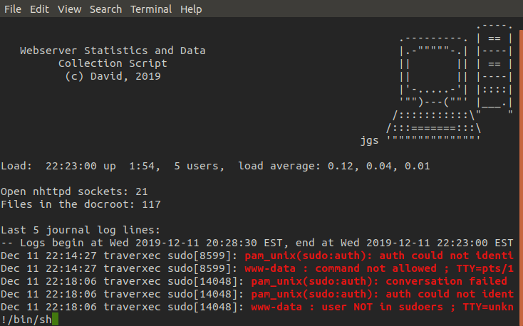

Traverxec - HackTheBox
Released: 16th Nov 2019 - Retired: 11th April 2020
Summary: An easy difficulty machine hosted on HackTheBox requiring exploitation of nostromo web server and knowledge of GTFObins.
My friend Tikvah and I worked on rooting this box together!
Starting off if we go to the machines address using a browser we are presented with a standard looking portfolio type website. If we perform some recon we don't find much in terms of content but we can identify the open ports 80 and 22, with the webserver running known as nostromo.
If we check the version for this webserver we can find a particular public exploit that uses a directory traversal vulnerability that allows us to gain RCE on the hosting server.
So our next step is to use the script which performs the directory traversal to gain a shell on the server. First we set up our listener to catch the reverse shell. Next we prep to run the script with our arguments, first argument being the machines IP, second being the port the web server is running on and third being the command we want to execute, here we have chosen nc to connect back to our machine.
Once we run the script all we need to do is wait a few seconds and we have our shell!
With a foothold now in place we want to begin enumerating to find a way to escalate our privileges. For this we'll use the LinEnum script, first we have to host the file on our own machine and then with our foothold shell grab the script with wget.
Attacking machine
Victim machine
Once we've ran the script and placed the results in a file we want to pass said file back to our machine for further analysis. For this task we can use nc.
Victim machine
Attacking machine
Looking through the results we located the '.htpasswd' file, exfiltrated it and cracked it. However we couldn't find where we needed to use this password.
Taking another look through the results we found that the public_www directory did indeed exist and it was located in the user david's home directory, we didn't have permissions in his home directory but we did in the public_www directory. Here we found an interesting tarball file.

Again using nc we exfiltrated the file to our own machine for further analysis.
Victim machine
Attacking machine
When we unpack the contents of the tarball we find a public rsa key which can be used by us to login into ssh without david's password. The only problem is we do need a passphrase along with this key.
If we use a module in John The Ripper's jumbo distribution called ssh2john we can covert the key to a format that we can crack using John and the trusty rockyou.txt wordlist. As you can see the passphrase is hunter.
Now all that's left to do is to use ssh, with the -i (identity_file) option with it's argument being our ssh key, to login into the machine as david. As you can see it prompts us for the passphrase and once entered we now have access to david's account!
Now we are in david's home directory we find another directory there called bin which has a shell script in it called server-stats.sh. When we run this script it prints a few stats regarding the server and then prints the last 5 logs left by the nostromo. To do this it opens the logs in journalctl, invoked with sudo, and pipes the output into the cat command.
With not much else to go off of at this point, we copy the script into a different file so we can play around with it and see what makes it tick.
After a lot of experimentation and no success we took to the hackthebox forums and found a hint mentioning GTFObins. They are basically various unix binaries that allow the user to escape into a shell from a perhaps limited environment, read and write to files, upload or download files etc. And looking at the entry for journalctl we can see that this binary definitely allows us to drop into a shell.
Taking a second look at the script it's actually quite obvious now how simple this exploit is. When the script runs journalctl as sudo and then pipes it into cat it loses it's root privileges. So all we need to do is comment out the pipe so journalctl is ran with no interruptions.
Once we run the script and enter the journactl process all that's left to do is perform the shell escape and we have root! ٩(•̤̀ᵕ•̤́๑)ᵒᵏᵎᵎᵎᵎ
